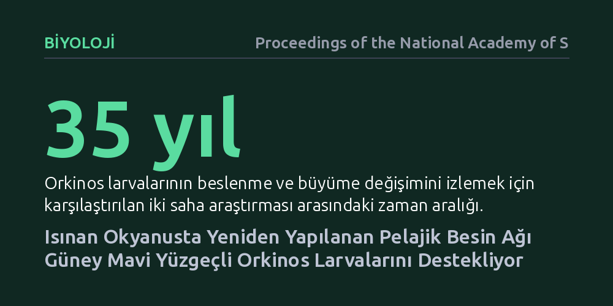

BIYOLOJI · Proceedings of the National Academy of Sciences · 2026-09-08
Araştırmacılar, ısınan Hint Okyanusu'nda güney mavi yüzgeçli orkinos larvalarının 35 yıllık beslenme ve büyüme değişimini inceledi. Okyanus ısınmasına rağmen pelajik besin ağının yeniden yapılanarak larvaların direncini ve büyümesini desteklediği tespit edildi.
Okyanus ısınmasının deniz ekosistemlerini doğrudan çökerteceği varsayımının aksine, besin ağlarının esneyerek kritik balık larvalarını beklenenden daha dirençli kılabileceğini gösteriyor.

Güney mavi yüzgeçli orkinos, okyanusların en hızlı ve ekonomik açıdan en değerli yırtıcı balıklarından biridir. Ancak bu dev balıkların geleceği, yaşamlarının ilk birkaç haftasında, Hint Okyanusu'nun tropikal sularında planktonlarla beslenen milimetrik larvaların hayatta kalmasına bağlıdır. İklim modelleri, küresel ısınmayla birlikte okyanus yüzey sularının ısınacağını, tabakalaşmanın artacağını ve bu durumun besin zincirinin temelini oluşturan fitoplankton ile zooplankton üretimini düşürerek orkinos yavrularını aç bırakacağını öngörüyordu.
Ne var ki mevcut ekolojik modellerin çoğu, besin ağlarındaki karmaşık uyum mekanizmalarını ve türler arası esnek etkileşimleri hesaba katmıyor. Bu durum, "Isınan bir okyanusta orkinos larvaları gerçekten aç kalarak yok mu olacak, yoksa ekosistem beklenmedik bir denge mi kuracak?" sorusunu deniz biyolojisinin en kritik tartışmalarından biri haline getirdi.
Araştırmacılar bu sorunun cevabını bulmak için güney mavi yüzgeçli orkinosların bilinen tek yumurtlama alanı olan doğu Hint Okyanusu'nda 35 yıl arayla yürütülen iki kapsamlı saha çalışmasını mercek altına aldı. 1980'lerin sonundaki tarihsel örnekleme verileri ile günümüzün ısınmış okyanus koşullarında toplanan yeni veriler doğrudan kıyaslandı.
Çalışmada incelenen orkinos larvalarının mide içerikleri, avladıkları mikroorganizmalar, günlük büyüme halkaları ve bölgedeki plankton topluluğunun yapısı ayrıntılı olarak analiz edildi. Böylece deniz suyu sıcaklığındaki belirgin artışın, larvaların beslenme başarısı ve büyüme hızları üzerindeki net etkisi doğrudan sahadan toplanan biyolojik kanıtlarla ortaya kondu.
Ortaya çıkan bulgular, karamsar iklim simülasyonlarının çizdiği tablodan oldukça farklı bir gerçeğe işaret etti. Hint Okyanusu belirgin biçimde ısınmış olmasına rağmen, orkinos larvalarının beslenme oranlarında ve büyüme hızlarında bir çöküş yaşanmamıştı. Aksine, larvaların şaşırtıcı bir direnç sergilediği ve sağlıklı biçimde büyümeyi sürdürdüğü görüldü.
Bu direncin arkasındaki mekanizma, pelajik besin ağının kendi içinde yeniden hizalanmasıydı. Isınan ve tabakalaşan sularda klasik besin zinciri zayıflarken, tulumlular sınıfından serbest yüzen appendiküleryanlar sistemde öne çıkmıştı. Mukus salgılarıyla minik mikroorganizmaları süzebilen bu canlılar çoğalmış, orkinos larvaları da beslenmelerini değişen bu mikro zooplankton dengesine başarıyla uyarlamıştı.
Bu çalışma, deniz ekosistemlerinin iklim baskısına karşı doğrusal ve tekdüze tepkiler vermediğini gösteriyor. Geleneksel modeller türlerin sadece mevcut diyetleriyle sabit kalacağını varsaydığı için ekosistemlerin çöküşünü hızla öngörebiliyor; ancak doğadaki besin ağları alternatif yollar üreterek türlerin esnekliğini artırabiliyor.
Yine de bu bulgu, okyanus ısınmasının tamamen zararsız olduğu anlamına gelmiyor. Besin ağındaki bu yeniden yapılanma larvaların bugünkü sıcaklıklara dayanmasını sağlasa da, sıcaklık artışının devam etmesi veya aşırı denizel sıcak hava dalgalarının sıklaşması durumunda bu biyolojik tampon mekanizmasının bir eşiği aşıp aşamayacağı henüz bilinmiyor.